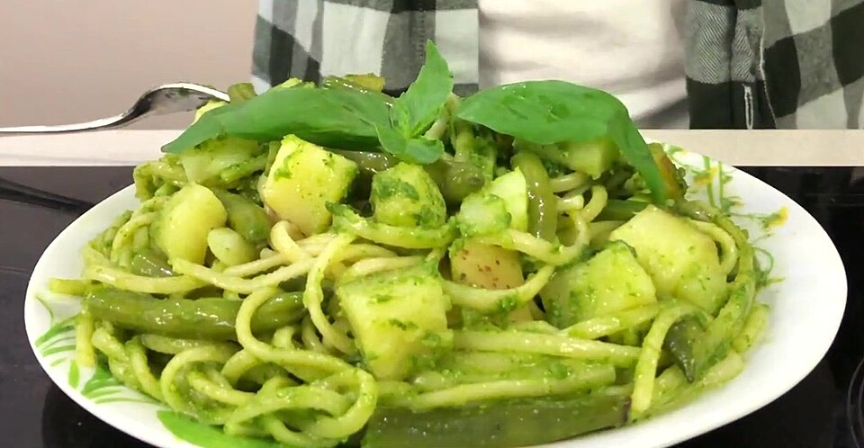

Pesto fatto come si deve, trippa, pesce e dolci della casa. A pranzo dal lunedì al sabato, con un menu fisso completo di acqua e vino.

Tutti i nostri piatti sono disponibili anche da asporto e con consegna a domicilio. Chiamaci o scrivici su WhatsApp, oppure ordina su Just Eat.
| Lunedì | 12:00 – 15:00 |
| Martedì | 12:00 – 15:00 |
| Mercoledì | 12:00 – 15:00 |
| Giovedì | 12:00 – 15:00 |
| Venerdì | 12:00 – 15:00 |
| Sabato | 12:00 – 15:00 |
| Domenica | Chiuso |